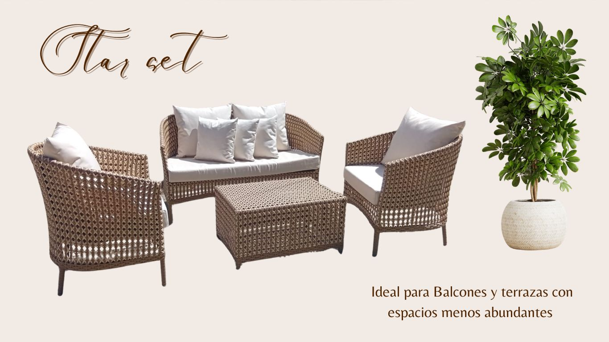

Resistencia real al agua y al sol
Ideal para patios, terrazas y áreas de piscina donde el mobiliario está expuesto a lluvia, calor y uso continuo.

Muebles para terrazas, patios y piscinas
En MASH encuentras artículos para el hogar y muebles resistentes diseñados para exterior, con opciones elegantes y funcionales para transformar tu espacio en República Dominicana.
Explora juegos de terraza, sets de exterior y muebles de jardín seleccionados para hogares, villas, hoteles y restaurantes que buscan una imagen cuidada y materiales duraderos para intemperie.
Muebles para patio y terraza en Santiago, pensados para recibir con comodidad, estilo y mejor aprovechamiento del espacio.
Balcón y dining Mesas y sillasOpciones para balcones, rooftops y áreas de comedor exterior en residencias, hoteles y restaurantes.
Piscina y relax Descanso y confortChaise lounges y camas balinesas para crear zonas de descanso elegantes en piscinas, villas y proyectos de alto nivel.
Cada colección está pensada para responder a una necesidad real de compra: durabilidad, fácil mantenimiento, buena presencia y buen desempeño en espacios abiertos de República Dominicana.
Ideal para patios, terrazas y áreas de piscina donde el mobiliario está expuesto a lluvia, calor y uso continuo.
Acabados con una presencia cálida y cuidada para quienes quieren muebles elegantes para balcón o juegos de terraza con estilo contemporáneo.
Estructuras pensadas para aportar estabilidad, confianza y mejor rendimiento en exterior, incluso en ambientes exigentes.
Soluciones para clientes residenciales, hoteles, restaurantes, villas y proyectos comerciales que necesitan mobiliario exterior para negocios o áreas sociales.
Esta coleccion esta pensada para quienes buscan muebles para patio en Santiago, muebles de terraza modernos y sets de exterior que ayuden a crear un ambiente social comodo, elegante y facil de disfrutar todos los dias.

Un juego de sala exterior amplio y elegante para terrazas donde quieres recibir con estilo, comodidad y una presencia impecable.

Un set sobrio y facil de combinar para patios, balcones amplios o terrazas que necesitan un look limpio y acogedor.

Ideal para aprovechar esquinas y crear una terraza social mas amplia, funcional y comoda.

Una opcion con personalidad para proyectos que quieren un punto focal diferente y elegante en exterior.

Ligero a la vista, practico y muy funcional para terrazas modernas de estilo limpio.

El rincon ideal para conversar, relajarte y elevar balcones o patios con una composicion mas intima.

Una propuesta versatil para hogares y proyectos que buscan muebles duraderos para intemperie sin recargar el ambiente.
Aqui encuentras muebles para balcon en Santiago, comedores para terraza y opciones funcionales para restaurantes, rooftops y areas sociales donde la imagen del espacio importa tanto como la comodidad.

Una mesa con presencia moderna para quienes quieren un comedor exterior con caracter y gran valor visual.

Calido, elegante y muy acogedor para cenas en familia o reuniones en ambientes de hospitalidad.

Una opcion flexible para espacios donde quieres comer, conversar y relajarte en un mismo ambiente.

Convierte tu balcon en un espacio de lujo con un comedor de exterior elegante, comodo y facil de integrar.

Ideal para espacios mas pequenos sin perder estilo, funcionalidad ni una presencia bien lograda.
Seleccionamos piezas para crear un rincon de calma junto a la piscina, en un jardin o en una villa, con muebles resistentes a lluvia y sol que mantienen una imagen premium en exterior.

Una cama balinesa que transforma cualquier area de piscina en un espacio de descanso premium.

Elegante, limpia y acogedora para quienes quieren un espacio relajado y bien montado.

Una chaise comoda y bonita para tomar sol, leer o simplemente descansar mejor.

Tu propio rincon de descanso con estilo resort, pensado para exterior y para disfrutar mas tiempo.

Una propuesta comoda y visualmente impactante para zonas de descanso exteriores de alto nivel.

Diseno con mucha presencia para un ambiente exterior que quiere verse diferente y mas exclusivo.

Una pieza pensada para relajarte con comodidad y darle valor visual a tu area exterior.
Este set combina comodidad, diseno y presencia en una sola propuesta. Es ideal si quieres muebles de terraza modernos con materiales duraderos y una composicion elegante desde el primer vistazo.

Un set completo que equilibra confort, elegancia y materiales de calidad para crear un ambiente exterior que invita a quedarse.
En exterior no basta con que un mueble se vea bien. Por eso trabajamos con materiales pensados para sol, humedad y uso constante, ideales para quienes buscan muebles resistentes al agua, muebles resistentes al sol y soluciones confiables para exteriores RD.

Un acabado calido y elegante, pensado para responder mejor al clima exterior de Republica Dominicana.

Una base firme y confiable para que el mueble se mantenga estable, seguro y listo para exterior.
"Un mueble exterior debe verse bien el primer dia, pero tambien seguir respondiendo bien con el uso y el tiempo."MASH | Seleccion de colecciones para exterior
Con algunas rutinas basicas puedes conservar mejor la presencia, la comodidad y la vida util de tus muebles exteriores.
Limpiala con un pano humedo y, si hace falta, jabon neutro. Evita productos abrasivos para cuidar mejor el acabado.
Puedes limpiarla con cepillo suave, agua y shampoo delicado para conservar mejor su textura y presencia visual.
Si se humedece, deja secar al aire. Lava el forro en ciclo delicado y evita secadora o productos agresivos.
Trabajamos desde Santiago de los Caballeros para clientes que buscan comprar o cotizar muebles de exterior con mejor criterio, ya sea para un balcon residencial, una terraza social, una piscina privada o un proyecto comercial.
Seleccion para balcones, patios y terrazas donde se necesita comodidad, estilo y materiales preparados para exterior.
Clientes residenciales Santiago y Republica DominicanaMobiliario exterior para hoteles, restaurantes y areas sociales que buscan una imagen elegante y funcional para uso frecuente.
Clientes comerciales Hospitalidad y negociosAsesoria para villas y proyectos donde importa la coherencia visual, la durabilidad y la experiencia del cliente final.
Proyectos especiales Exterior premiumRespuestas claras para personas que estan comparando opciones, evaluando materiales o preparando una cotizacion para su hogar o negocio.
Los muebles fabricados en fibra sintetica y con perfiles galvanizados son una opcion muy recomendable para exteriores porque responden mejor al sol, la humedad y el uso constante. Funcionan bien en terrazas, patios, balcones y piscinas en Republica Dominicana.
Si. Trabajamos opciones para balcones, patios, terrazas y areas sociales en Santiago, con asesoria personalizada para ayudarte a elegir el set segun tamano, estilo y uso del espacio.
La fibra sintetica esta pensada para exterior y ofrece una combinacion muy valiosa de durabilidad, facil limpieza y apariencia elegante. Con cuidados basicos puede conservar muy bien su presencia a lo largo del tiempo.
Si. Atendemos proyectos para hoteles, restaurantes, villas y espacios comerciales que necesitan mobiliario exterior para negocios con una imagen premium y materiales listos para uso frecuente.
Los perfiles galvanizados ayudan a que la estructura del mueble sea mas estable y apta para condiciones de exterior. Son una base confiable cuando el espacio esta expuesto a humedad, sol y uso continuo.
Si. Puedes escribirnos por WhatsApp para cotizar muebles de exterior para una residencia, una villa, un hotel, un restaurante o un proyecto comercial. Te orientamos segun el tipo de espacio y la composicion que necesitas.

"La idea es que compres algo que se vea bien, resista el exterior y tenga sentido para tu espacio."
Cada consulta se trabaja con una mirada practica y comercial para que puedas cotizar mejor, comparar opciones con claridad y elegir una composicion alineada con tu terraza, patio, balcon, piscina o proyecto de hospitalidad.
Te respondemos de forma personalizada para ayudarte con estilo, disponibilidad, tipos de uso y opciones que vayan con tu hogar, villa, hotel o restaurante.